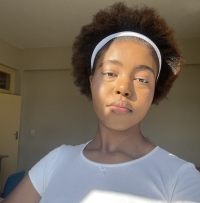

Miska Mpolesha | WDD 130

My friends call me Mickey Mouse because my first name is Miska from Mickey Mouse's famous line "Miska Muska Mickey Mouse!" and no my parents did not name me after a cartoon show ,my name means abundance in my native language which is Luba from Kasai in the DRC. Having a name that means abundance has definitely translated into my hobbies. I have a wide range of hobbies from running, reading and poetry to songwriting, tech and orthopaedics. However at the end of the day I am just a 21 year old girl, based in Johannesbrug who is working towards building a meaningful career in tech that will help and positively impact the African technological landscape.